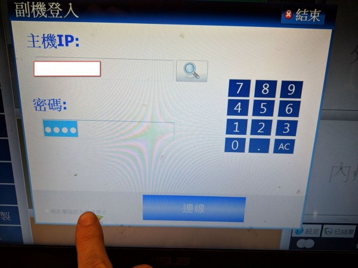
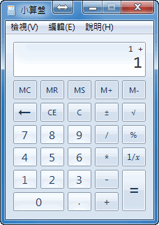
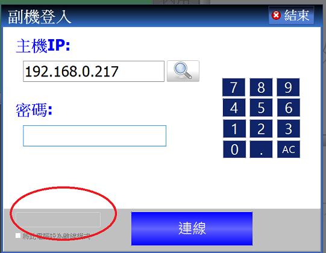

如我所觸控的地方,無法點選打勾.....附近區域也觸點過都無法把框框成功打勾(框框上的地方也有觸點)請問這是解析度的問題還是程式問題呢

如我所觸控的地方,無法點選打勾.....附近區域也觸點過都無法把框框成功打勾(框框上的地方也有觸點)請問這是解析度的問題還是程式問題呢
您好
可能該區域螢幕觸控故障 您可使用滑鼠進行點擊看看 如果可以 那就是觸控螢幕區域故障
或是您可使用小算盤程式 將程式移到該處測試 看是否能順利點擊

站長增加了解除區域的方框 點擊方框應能啟用打勾方框
請至首頁下載更新
